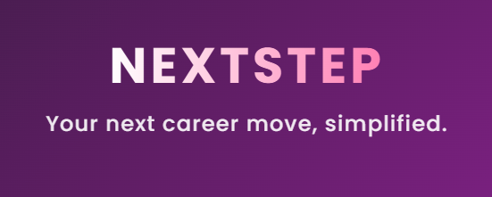

NextStep - A Swipe-Based Job Matching App
NextStep is a web and mobile job-matching platform designed to simplify the job search process using a swipe-based interface. It leverages AI-driven recommendations and real-time tracking to connect job seekers with employers efficiently.
Table of Contents
- Overview
- Core Objectives
- Technology Stack
- Installation
- Configuration
- Running the Application
- API Endpoints
- Contributing
- License
Overview
NextStep is a job-matching application with a swipe-based interface that helps job seekers efficiently browse and apply for jobs. Employers can post job listings, track applications, and connect with candidates in real time.
Core Objectives
- Swipe-Based Job Discovery – Browse jobs with a swipe-like/scroll experience inspired from popular apps such as Hinge, Tiktok, Tinder.
- AI-Powered Job Recommendations – Tailored job suggestions based on profile & history
- One-Click Apply – Apply instantly with stored profile/resume
- Application Tracking – Track job application statuses in real-time
- Employer Dashboard – Post jobs, review candidates, and schedule interviews
- Multi-Platform Support – Accessible via Web and Mobile
Technology Stack
Frontend
- Framework: React.js(Web)/React Native (Mobile)
- Styling: TailwindCSS
- React Router – Frontend navigation
- Axios – API communication
Backend
- Node.js – Server-side runtime
- Express.js – Middleware
- MongoDB Atlas – Cloud-based NoSQL database
- MongoDB Client – MongoDB SDK
- JWT (JSON Web Tokens) – Authentication system
- Firebase Cloud Messaging (FCM) – Push notifications
- AWS/GCP – Cloud hosting (for scalability)
- Jest - Unit testing
- JSDoc - Code documentation
DevOps & Deployment
- pending.
Installation
# 1 Clone the Repository
git clone https://github.com/drewstake/nextstep.git
cd nextstep
# 2 Install Backend Dependencies
cd server
npm install
# 3 Run server unit tests (you must be in server folder)
cd server
npm test
# Run unit tests with code coverage report (you must be in server folder)
npm run test:coverage
# 4 Install Frontend Dependencies
cd ../src
npm install
# 5 Regenerate jsdocs (currently available only for server-side API code)
cd server
# Notice: this is a global install. Hence, must be installed separately.
npm install -g jsdoc
jsdoc -c jsdoc.json
Configuration
Before running the app, configure the environment variables.
Frontend .env File
REACT_APP_BACKEND_URL=http://localhost:4000
Backend .env File
MONGO_URI=mongodb+srv://<username>:<password>@cluster0.mongodb.net/nextstep
PORT=4000
JWT_SECRET=your_jwt_secret
FIREBASE_SERVER_KEY=your_firebase_server_key
Running The Application
# 1 Start Backend
cd backend
npm start
Server will run on http://localhost:4000
# 2 Start Frontend
cd src
npm start
Frontend will run on http://localhost:3000
API Endpoints
| Method | Endpoint | Description |
|---|---|---|
| POST | /api/register | Register a new user |
| POST | /api/login | Authenticate user |
| GET | /api/jobs | Retrieve job listings |
| POST | /api/apply | Apply for a job |
| GET | /api/applications | Get user’s job applications |
| DELETE | /api/applications/:id | Withdraw an application |
Contributing
We welcome contributions! Follow these steps:
- Fork the repository
- Create a new branch (feature/your-feature-name)
- Commit your changes
- Push to your fork
- Submit a pull request
License
This project is licensed under the MIT License.
Future Enhancements
- Real-Time Chat for Employers & Candidates
- AI-Powered Resume Screening
- Interview Scheduling with Google Calendar